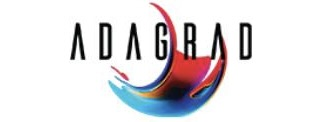
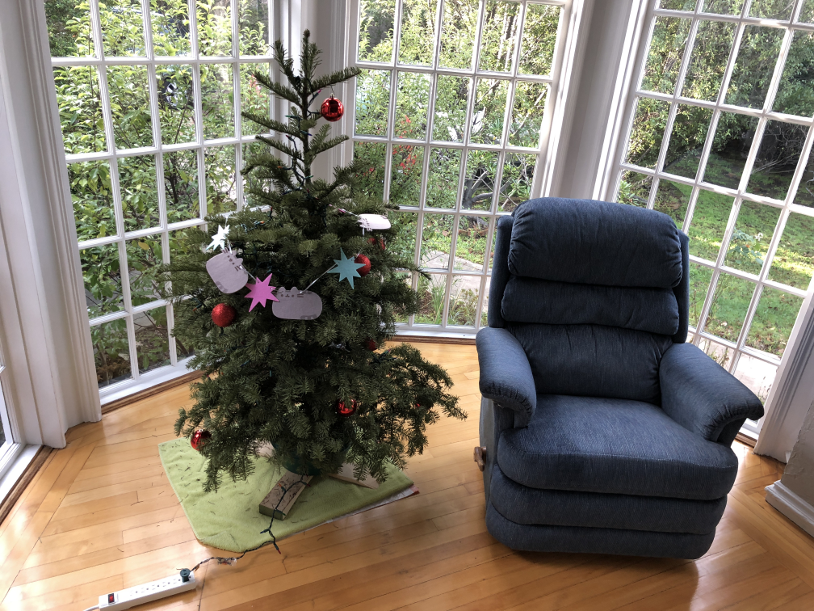

|
Neeraj Panse I am a Masters in Computer Vision (MSCV) student at Carnegie Mellon University graduating in December 2023. My main interests are Computer Vision, Machine Learning and Football! At CMU, I am a part of the Airlab , advised by Dr. Sebastian Scherer on 3D instance segmentation in indoor environments. I recently completed a summer internship at Zillow, in their AI Photography team where I worked on an exciting problem for 3D Virtual Tours. I recently also published a paper on Semantically Stylized Radiance Fields at the AI3DCC workshop at ICCV 2023. Prior to CMU, I spent two amazing years at Adagrad AI where I worked on object detection and recognition on edge devices. Specifically, I built and led a team of engineers, researchers and designers to build a Number Plate Recognition system for access control. From an initial prototype to 60+ robust deployments all over India, I was part of all aspects of product development, from researching neural network architectures to building real-time video inference pipelines on edge devices. I am looking for full-time opportunities in Perception, 3D Computer Vision and Machine Learning starting January 2024. Feel free to reach out at the email mentioned below! |
{kind=link}
Industry Experience |
|
Zillow Rich Media Experience |

Adagrad AI |
Fynd Applied Machine Learning Team |
Relevant Projects and PublicationsA lot of my experience lies in 2D and 3D Perception. Specifically in object detection, semantic + instance segmentation and image recognition tasks. I also hold a keen interest in 3D Reconstruction, Neural Rendering and Generative Computer Vision. |
|
|
Semantic 3D Perception for Indoor Environments
Neeraj Panse , Rakshith Srinivasa Murthy , Shibo Zhao , Sebastian Scherer Ongoing Research at Airlab, CMU [WIP] Project page Currently working on 3D instance level understanding of an environment for robot navigation in real-time. In this project we are specifically focusing on 3D object detection for sparse point clouds from a VLP-16 lidar sensor. Investigating the use of pillar encoder architectures in an indoor environment. Here we are also working on building robust data pipelines that can provide accurate pseudo annotations for 3D point clouds by distilling knowledge from RGB images (using robust 2D object detection and segmentation). |
|

|
S2RF: Semantically Stylized Radiance Fields
Neeraj Panse , Dishani Lahiri , Moneish Kumar ICCV, 2023 Workshop on AI for 3D Content Creation, Paris, France Publication / Project page We present our method for transferring style from any arbitrary image(s) to object(s) within a 3D scene. Our primary objective is to offer more control in 3D scene stylization, facilitating the creation of customizable and stylized scene images from arbitrary viewpoints. To achieve this, we propose a novel approach that incorporates nearest neighborhood-based loss, allowing for flexible 3D scene reconstruction while effectively capturing intricate style details and ensuring multi-view consistency. |

|
Computer Vision based Offside Detection in Soccer
Neeraj Panse, Ameya Mahabaleshwarkar 2020 ACM Multimedia, Multimedia Content Analysis in Sports (MMSports), Seattle, Washington Publication / Github An intersection of my passion for Football and Computer Vision, we developed a fully automated Computer Vision solution for detecting offsides from a single image of any football game. We improved major drawbacks of current, real-world soccer offside decision-making by developing a Computer Vision and Image Processing based pipeline for providing accurate, fast, and explainable offside decisions. |